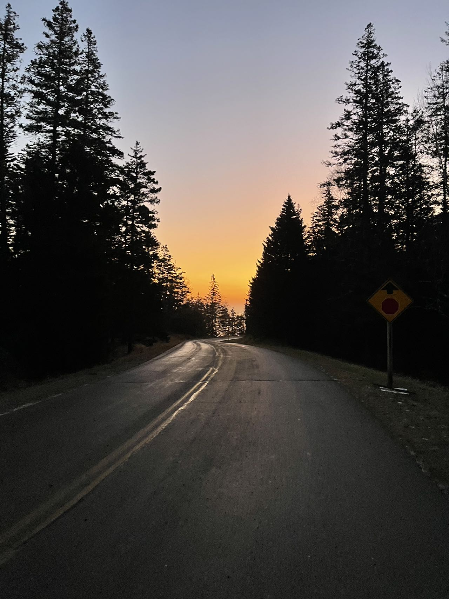

 黎明还是黄昏？
好久不更新了。想用react改写一下网站，一直拖拖拉拉没有进展。结果连post也懒得写。兜兜转转今年已经见底。明年？希望结语至少不是“拖拉”。
今天的晨雾一直没有散，居然就在窗外徘徊了一整天。看来它是打算在这个城市过新年了。
跟它不同，我没有什么打算，也没有什么总结，这些东西还是留给那些充实的人去弄。对于又蹉跎了一年的我等芸芸众生，树皮多一层，年轮多一圈，可喜可贺。
虽然这样说，一年临了还是想充实一把，混个模样。也许就是这个原因，这次去roadtrip之前特地去超市买了本子，希望自己能在motel床上涂鸦几笔。
现在下学期多了一本空笔记本。可喜可贺。
这么想来去西藏的一个月也随身带了一本小本子。只要是一个人出游，似乎都要强迫症一样拉着纸笔。
所以到底是出游没有感想了呢？还是感想没有动力记录了呢？
刚才说了，要充实一把，混个模样。但是要把一年的功课补上是不可能了，补个三四天，聊表歉意。
窗外还是一片灰。不知道晨雾对2023有什么愿望，如果有的话，祝它能在散去之前实现。
——分割线——
这次27号早晨出发，30号夜里回来，总计四天。为了节省租车和住宿经费，时间上非常紧凑，四天之内总计行
程超过1000英里，最后一天就超过500英里，是名副其实的 '在路上'。
第一天从纽约出发前往白山。途径泽西，纽约，康涅狄格，麻省，新罕布什尔五州。预计时间六个半小时，实际因为在Mt Lafayette附近的交通事故耽误了一个小时。
冬季高速虽然会除冰，但是白山山路的限速高达匪夷所思的七十。按照美国习俗，这也就意味着人均会开到八十。四点五十左右天色已经转暗，大家纷纷停车，再往前升起了黑色的烟柱。又过了一会儿前面的车纷纷避让到路旁的草地上，一瞬间还以为他们打算绕过事故现场，直到被后面的消防车狠狠滴了一下，赶紧闪边。再一会儿什么警车啦拖车啦都来了。又等了一个小时，通车时除了两边的树林，远方一片漆黑。
一个人在林子里开夜路是一种古怪的体验。若是大路，三四辆车前后依偎在一起，不远不近地跟着，生怕掉队。倘若一个人拐进岔路，难免心跳加快，手心出汗。前方除了路牌的反光无从辨认方向，后视镜也只映出一片黑色。黑到什么程度呢？即使后座上有个人也完全无从察觉。此念一闪，肩膀不由得一紧，油门也不由得踩得更快了。
目的地Gorham是个高速边的北方小镇。因为临近滑雪场和白山主峰的缘故，沿途散落着许多快餐馆和家庭旅店。虽然是登山淡季，附近的两个雪场人满为患，导致住宿价格丝毫不低。挑个motel住下。
电视机已经是有年代感的物什了啊。姑且看看古早动画。
…嗯，然后笔记本都没从包里拿出来就睡了。
第二天起个小早，向南进发。沿路所有的trail积雪都超过五十公分。
这个本来是trail入口旁边的露营地，感受一下。
遥致Mt Washington。夏天再见。
穿过白雪皑皑的山区，出发前往acadia国家公园。
Acadia中文名似乎是荒山岛。主岛本身大概比崇明岛大一点（不是上海人？抱歉中国就那一个岛大小比较合适)，是一个桃子的形状。岛上大部分是公园区域，零星散布着几个港口，通过港口可以前往外围小岛屿。本地居民主要是渔民和酒店老板。最大的港口小镇叫Bar Harbour，很有感觉的名字。
冬季公园大部分道路封闭，游园主要靠两条腿。对轮子上的民族而言，用腿可是要老命了。所以初来巴港，感觉一片萧条。商店街上到处是“closed for the season”告示。与小镇不相称的巨大停车场空荡荡的。安顿下来走到街上，迎面一个采购回来的老婆婆，推着自行车在雪地里挪动，可能是看我也很狼狈，彼此一笑。“At least the wind isn't blowing. "
其实本地居民和游客很好分辨。本地人大多比较壮实，穿的像饭团。鼻头永远是红红的，说话带着夸张的口音。游客一般是年轻couple，穿着冲锋衣或者登山服，鼻子和脸没有色差。
夜里下起了大雪，如果有圣诞老人的话，可能就会住在这样的小镇上吧。
第三天走了一天的路。几个著名景观——sand beach，thunder hole， otter point，Jordon pond全部踩到。
雪地上形形色色的脚印，在冬天，没有人能抹掉行踪。
冬天的trail还是有一定危险的。积雪之下都是暗冰。
一个人走在山路上，慢慢的，雪地里的脚印消失了，只能勉强看出trail的走向。停下脚步，听得到积雪融化的声音。天与地，山与水，都是我一人的。
晚上绕岛一周，早早歇息。
第四天五点半起床去看日出。把车停在停车场，天边已经泛白，雪水汇成了小溪，没有融化的暗冰让我摔了一跤。不过还是赶在太阳升起之前到达了otter point。
写日出的作文，我们小学都背诵过，我的语文水平这些年大概只有退步，就不尝试了。不过在看着太阳升起的这一个小时里，还是注意到了自己这一年的变化。
例如，上山时一路无人，清晨的冷空气大口大口吸进肺里，转化成喜悦。这样我才意识到，啊原来开心是这样的感觉。
再比如，但是在原地站了五分钟之后，无聊的沉闷感就涌了上来。远处钟声随着海浪起伏，却烦躁不安，下意识的想拿手机（即使没有信号）。
还比如，在太阳跃升而出的一刹那，似乎有一种很久之前曾经体会过的强烈感觉要涌现出来，半晌梗在喉咙里，在转换为语言之前就消失了。
最近两年经常有这样的时候，仿佛感官变得迟钝了，记忆变得模糊了。我很担心这是否是一种心理上的“失明”。
就这样回家的十个小时，杂七杂八的想了很多。到纽约开始堵车。什么？这不算啥。在大上海开车，我们也是见过世面的。连刹车都不怎么踩叫堵车？只不过不睬油门，四个轮子慢慢滑罢了，我愿称纽约“滑旱冰”。
回到家，回到人群中间。早上的日出仿佛是上辈子的事情。城市的天空没有星星，让人不知道新的一年在哪个方向。不过距离新年还有一段时间，该留下的还能丢下。这个网站也留在2022——明年早点把新版赶出来。
-2022.12.31